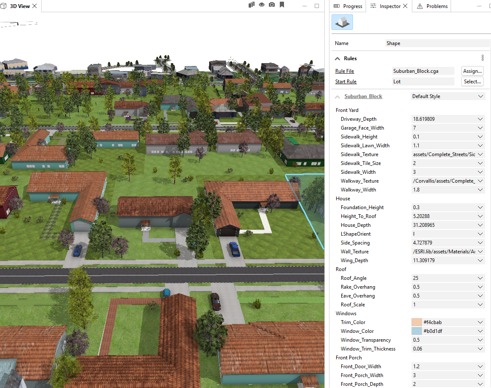

Procedural Modelling with Unreal Engine and City Engine
Immersive experience in the diverse landscapes of farmlands, woods and suburban areas in Unreal Engine.
Download HereKey Features
This project aims to integrate Geographical Information System (GIS) to build a 3D virtual environment in Unreal Engine. The chosen model area is in Corvallis, Oregon (see map), selected for its diverse landscapes —including natural areas (grasslands, woodlands, scrub), land uses (farmland, farmyards), and suburban housing. The ultimate goal is to showcase the integration workflow as a case study of the integration of GIS and Graphics to motivate further research and use cases in building the digital twin.

Real-World Reconstruction
The simulation environment is reconstructed from real-world geographic data sourced from OpenStreetMap. From OpenStreetMap, we are able to retrieve a colleciton of shape boundaries to identify geographic areas associated with its feature attributes such as land uses, height, shape type to populate the virtual environment with 3D assets and layout that reflect its real-world layout. This data-driven approach ensures that the environment is both believable and scalable, enabling rapid generation of suburban areas without compromising on realism or detail.
Procedural Content Generation
From suburban houses, powerlines to a vast areas of farmlands, woods, the environment is built using rule-based procedural modeling, allowing streets, houses, fences, and infrastructure to be automatically generated dynamically. This approach minimizes manual design work, speeds up iteration, and ensures consistent, scalable worldbuilding across large areas
Technical Workflow
The project integrates two primary data layers: (1) Geospatial Data from OpenStreetMap (OSM), which includes 2D boundary and attribute data; (2) 3D Procedural Content, generated using a combination of CityEngine and Unreal Engine’s PCG (Procedural Content Generation) plugin.
1. Procedural Modelling in CityEngine
CityEngine is a ArcGIS application specializing in the generation of ubban environments It provides both manual drawing tool and procedural tool for city modelling with diverse compatibility with other applications such as 3D modelling application: Blender, or Web visualization (arcgis), or game engines (Unreal Engine, Unity). It uses a robust library of CGA rule packages to automate 3D asset generation.
a) Importing 2D GIS Data
GIS data from OSM is imported as two types:
- Shapes representing buildings, land uses, parking zones, etc.
- Graphs representing roads and linear infrastructure (e.g., fences, powerlines).
b) Generating 3D Content with CGA
CityEngine has its own unique programming language called CGA (Computer Generated Architecture). CGA rules use geometry operation to transform the shape, manipulate the shape, or apply textures to provide a rich, detailed 3D models. CGA rules are defined in rule packages (.rpk) alongside with 3D object files, and texture files referenced
Writing a CGA rule file: Suburban House Modelling
A suburban house model features an L-shaped structure, with one longer wing housing the garage, which faces the street. The garage connects to a driveway that extends directly to the street. The driveway is extruded and slightly inclined upward to match elevation changes or grading. Each house is fronted by a sidewalk running parallel to the street, typically accompanied by a lawn or green buffer that separates the house from the roadway. From the driveway, a walkway leads to the front door, cutting through the front yard and providing a clear pedestrian path from the street to the home’s entrance.
Integrate street attributes to House Generation
In CityEngine, the graph network not only generate street shapes but also subdivide lots enclosed by the street network. Here, this method is used to model residental areas where each lot is assigned the CGA rule files. Comparing with the traditional method of house generation from OSM building footprint (Figure 1), the lot subdivision method subdivide each lots and tags them with street facing attributes to identify the house orientation, thus enable the generation of driveway and sidewalk connected from the house to the street


Modifying exisitng CGA rule files
Street Modelling
From the street attribute, the street shape's width is calculated from the number of lanes, cycleway lanes, and parking lanes side. Then Complete Street rule package are assigned to the Street to automate the generation of the street. Object attributes can then be used to connect to the variable defined in the rule package.
Complete StreetComplete Street Rule Package to generate streets and sidewalks based on number of lanes, street direction, cycleway, and parking attributes.
Wasserman, D. Complete Street Rule. (2015) GitHub repository, https://github.com/d-wasserman/Complete_Street_Rule.2. Procedural Content Generation in Unreal Engine
a) Importing CityEngine Models
Models are imported into Unreal Engine using the Datasmith plugin, preserving all object attributes as Asset User Data. These attributes are converted into tags used as filters in procedural content generation.
b) Creating PCG Graphs by Landscape Type
Separate PCG Graphs are created for each landscape type, such as wood, farmland, grass, meadow, and road.
c) PCG Workflow
Each PCG Graph performs the following steps:
- Perform a World Ray Hit Query on actors tagged by landscape type (e.g.,
wood,grass). - Sample the hit surface into points based on parameters like looseness, point extents, and point density (e.g., woods have denser points than grass).
- Project points onto the terrain surface.
- Apply random offsets, scales, and rotations to each point to add natural variation.
- Spawn a variety of static meshes at the points according to the environment type.

Future Enhancements
Suburban House can be enhanced to model more random houses
More diverse landscapes of farmland and grassland can be populated with diverse assets